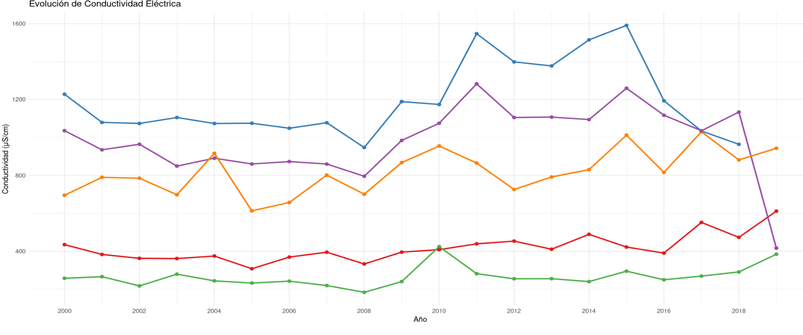

Evolución de Temperatura
Variación de la temperatura del agua en los diferentes sistemas fluviales (2000-2019)
Oxígeno Disuelto

Concentración de oxígeno disuelto en mg/L a lo largo del tiempo
Niveles de pH

Evolución del pH en los diferentes cuerpos de agua monitoreados
Conductividad Eléctrica
Variación de la conductividad eléctrica en μS/cm
Vista Multiparámetro
Comparativa integral de todos los parámetros fisicoquímicos analizados